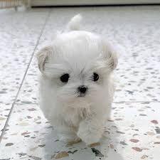
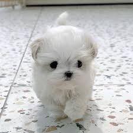

애완견 종류
활달한 강아지
- 요크셔 테리어
- 생기있고 활달한 성질을 가지고 있으며 자신보다 몸집이 큰 개나 집에 들어온 침입자를 겁내는 일이 벗어 좋은 변견이고 우리나라 최고의 가정견으로 자리 잡고 있다
- 말티즈
- 애정이 많고, 충실함 활발한 성격을 소유하고 있다 이 종은 1급 가정견으로 요크셔테리어와 함게 우리나라 최고의 가정견으로 자리잡고 있다.
- 포메 라이언
- 활기차고 명랑한 개로 유명하고, 걷는 모습이 우아하다. 충실하고 우호적인 성격이 가장 먼저 거론된다.
- 골든리트리버
- 이 견종은 충성심이 강하고 성격이 활달하여 어린아이나 여성이 상대하기에 적합한 견종이다. 참을성 또한 강하여 현재는 실내에서도 많이 길러지고 있다
 


 활달한 강아지
처음으로
활달한 강아지
처음으로
온순한 강아지
- 쉬즈
- 얼굴에서 풍기는 모습처럼 온순, 쉽게 친숙해지고 우호적이며, 어린아이나 여성들이 기르기에 적합한 견종이다.
- 머그
- 매우 사려가 깊고 사랑스러운 견종이며 그다지 손질이 필요하지 않고 식사량에 비해 많은 운동량이 필요하지 않다.
- 래브리도 리트리버
- 침착하고 영리하여 어린이들을 안심하고 맡길 수 있다. 사람을 즐겁게 해주려는 성질이 있다. 공을 가지고 노는것을 가장좋아한다. 현재 맹인 안내견과 마약견으로 사용중이다. 온순한 강아지를 좋아하는 분에게는 적합한 견종이다.

 활달한 강아지
처음으로
활달한 강아지
처음으로
사납지만 복종적인 강아지
- 미니어처핀셔
- 경계심이 강하고 영리하며 작은 몸집에 비해 매우 용감하다. 주인에게 매우 복종적이며 작은 몸집에 보디가드 역할을 충실히 수행한다.
- 푸들
- 사납진 않으나, 상당히 복종적이며, 지능지수가 애완경 중 가장 뛰어나다.
- 폭스테리어
- 가정에서 키우기에 적합한 품종이다. 보호본능이 강하고 정이 많다. 하지만 사냥을 하던 본능이 조금은 남아있어 사낭운 면이 있다. 이종을 좋은 품종으로 기르기 위해서는 어릴 때부터 엄한 훈련이 필요하기도 하다.


 사납지만 복종적인 강아지
처음으로
사납지만 복종적인 강아지
처음으로